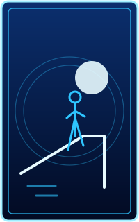

♪ BGM · Color Your NightLotus Juice · Persona 3 Reload

0EL LOCO
Dark Web
Antes de entrar: ¿de qué estamos hablando?
Tres términos que se confunden
“Web profunda”, “darknet” y “dark web” se usan como sinónimos, pero no lo son. La diferencia está en por qué un contenido no se ve desde un buscador normal.
Web profunda
Contenido que no está indexado por buscadores: tu correo, la intranet de una empresa, la plataforma de la universidad o cualquier página detrás de un inicio de sesión. Es la mayor parte de la web y casi todo es perfectamente cotidiano.
Darknet
Una red superpuesta (funciona “encima” de Internet) que requiere software específico y busca ocultar la relación entre los dos extremos de una comunicación. Tor e I2P son darknets.
Dark web
Los servicios alojados dentro de una darknet: sitios .onion en Tor o sitios .i2p (eepsites) en I2P. Este mismo sitio está pensado para publicarse así.
OJOEstar en la dark web no hace algo ilegal. Periódicos, organizaciones de derechos humanos y hasta entidades públicas publican sitios .onion para que cualquiera pueda llegar a ellos sin ser vigilado ni censurado.
Ruteo en capas: la idea central
Imagina que quieres enviar una carta sin que nadie sepa que tú le escribes a esa persona. Metes la carta en un sobre para el último mensajero, ese sobre dentro de otro para el mensajero del medio y ese dentro de otro para el primero. Cada mensajero solo puede abrir su sobre: ve de quién lo recibió y a quién debe pasarlo, nada más.
Cada relé “pela” una capa de cifrado. El mensaje se va haciendo más pequeño, como una cebolla: de ahí el nombre onion routing.
El emisor cifra el mensaje en capas y lo envía por una secuencia de relés.
Cada relé retira una capa y conoce solo el salto anterior y el siguiente.
Ningún relé intermedio necesita conocer a la vez el origen y el destino.
Anonimato no es invisibilidad
Lo que la red sí oculta
La relación entre quién eres (tu IP) y qué sitio visitas.
En los servicios ocultos, también la ubicación real del servidor.
El contenido del tráfico frente a quien observa tu conexión local.
Lo que la red no puede ocultar
Lo que tú mismo escribes: nombres, correos, cuentas personales.
Archivos que descargas y abres fuera del navegador.
Errores de las aplicaciones o de quien administra un servicio.
LECCIÓNHay que distinguir la seguridad de la red, la de las aplicaciones y la de las prácticas de sus usuarios. La historia de Silk Road lo muestra muy bien.
Investigadores del Naval Research Laboratory de Estados Unidos empiezan a estudiar el ruteo en capas: proteger comunicaciones haciendo que ningún punto intermedio vea a la vez el origen y el destino.
2002
Primera versión alfa de Tor
Aparece Tor, “The Onion Router”: la segunda generación de esa idea, pensada para que cualquier persona pueda usarla en Internet.
2003
Comienza el desarrollo de I2P
El “Invisible Internet Project” toma otro rumbo: en lugar de priorizar la salida a la web pública, se enfoca en servicios que viven dentro de su propia red.
2004
Tor se presenta al mundo académico
Se publica el artículo que describe el diseño de Tor y su código se libera como software libre, lo que permite que cualquiera lo revise y opere relés.
2006
Nace The Tor Project
Tor Project se constituye como organización sin ánimo de lucro para mantener el software y la red.
2011–2013
Silk Road
Un mercado que funcionaba como servicio oculto dentro de Tor. En 2013 su administrador fue identificado y detenido.
2017–2018
Servicios onion v3
Llegan las direcciones de 56 caracteres basadas en claves Ed25519, mucho más robustas que las antiguas de 16.
2021
Adiós a las direcciones v2
Tor deja de dar soporte a los servicios onion v2. Desde entonces, toda dirección .onion válida es v3.
El caso Silk Road
Silk Road fue un mercado que funcionaba como servicio oculto dentro de Tor. En 2013 su administrador, Ross Ulbricht, fue identificado y detenido.
Lo interesante para una clase de redes es cómo: la investigación no consistió en “romper” el cifrado de Tor, sino en aprovechar errores fuera de la red, como rastros dejados en foros públicos de Internet y fallas de configuración del propio servicio.
Seguridad de la red
Lo que garantiza Tor: rutas en capas, cifrado entre relés, direcciones autenticadas.
Seguridad de la aplicación
Lo que depende del sitio: su servidor web, su configuración, sus posibles fugas de información.
Prácticas del usuario
Lo que depende de las personas: reutilizar nombres, correos o cuentas que las identifican.
Dos caminos, un mismo objetivo
Tor e I2P comparten la meta de reducir la exposición de la identidad en la red, pero sus arquitecturas evolucionaron con prioridades distintas: Tor apostó por el acceso privado a la web pública (y, además, a servicios .onion), mientras que I2P apostó por los servicios internos de su propia red.
Tor es una red de miles de servidores voluntarios llamados relés. El cliente descarga periódicamente un consenso firmado por las autoridades de directorio, que lista los relés disponibles. Con esa lista elige tres y construye un circuito, negociando una clave distinta con cada uno, salto a salto.
El tráfico viaja dentro del circuito en celdas de tamaño fijo, cifradas en capas como vimos antes.
Guard
Primer salto. Tu proveedor de Internet ve la conexión hacia este relé de entrada. Tor lo mantiene estable por un tiempo para reducir el riesgo de caer en un relé malicioso.
Middle
Relé intermedio que separa el origen del último salto. No sabe quién eres ni a dónde vas.
Exit
Último relé: conecta con el servidor de la web pública. Para el sitio visitado, la conexión “viene” de aquí.
¿Quién sabe qué?
Tu ISPSabe que usas TorNo sabe qué visitas
GuardConoce tu IPNo conoce el destino
MiddleNo conoce tu IPNo conoce el destino
ExitConoce el destinoNo conoce tu IP
Sitio webVe la IP del ExitNo ve tu IP
Ninguna pieza por sí sola tiene la foto completa. Para unir origen y destino, alguien tendría que controlar u observar varios puntos a la vez.
El límite del relé de salida
Tor cifra el tráfico dentro del circuito, entre el cliente y los relés.
El tramo entre el relé de salida y un sitio público depende del cifrado de la aplicación.
Usar HTTPS protege ese tramo.
Un servicio .onion permanece dentro de Tor y no necesita relé de salida.
CUIDADO CON HTTPSi visitas un sitio público con HTTP (sin la “S”), el operador del relé de salida podría observar o modificar el contenido que va y viene.
Servicios onion
Tor no solo oculta la ubicación del cliente: también puede ocultar la del servidor. Un servicio onion se accede únicamente mediante Tor y su dirección termina en .onion. Lo más interesante es que la dirección es su identidad criptográfica: permite verificar que hablas con el servicio auténtico sin depender de DNS ni de certificados.
Clave pública Ed25519 (32 bytes): identifica al servicio. No contiene la clave privada, que se queda en el servidor.
Checksum (2 bytes): los primeros bytes de SHA3-256(".onion checksum" || clave pública || versión). Sirve para detectar errores al escribir la dirección.
Versión (1 byte): el valor 0x03, que identifica el formato v3.
Son 35 bytes = 280 bits. Base32 usa 5 bits por carácter, así que 280 ÷ 5 = 56 caracteres, a los que se agrega .onion.
BASE32 NO CIFRALa dirección solo representa datos públicos en un formato legible. Tor usa la clave pública para comprobar que la información del servicio esté firmada con la clave privada correspondiente.
Rendimiento y observabilidad
Tor prioriza circuitos de baja latencia para que navegar sea práctico.
La baja latencia no elimina el análisis de tráfico: un observador capaz de medir ambos extremos puede intentar correlacionar patrones de tiempo y volumen.
En redes censuradas se pueden usar bridges: relés que no aparecen en el directorio público habitual y por eso son más difíciles de bloquear.
Tor Metrics estima el uso, entre otras señales, a partir de solicitudes a los directorios; los clientes que usan bridges se estiman por separado.
El programa que participa en I2P (por ejemplo, i2pd). Transporta tráfico de la red, incluido tráfico de otras personas.
Destino
Una identidad criptográfica usada por una aplicación o servicio. Es a lo que te conectas, no a una IP.
Un router puede manejar varios destinos: por ejemplo, uno para un sitio web y otro para una aplicación de mensajería. La red busca separar la identidad del router de los destinos que este sirve, para que no se pueda deducir qué máquina hay detrás de cada servicio.
ANALOGÍAEl router es como un teléfono; los destinos son distintos números que ese teléfono atiende. Quien te llama conoce el número, pero no dónde está el teléfono.
Túneles unidireccionales
A diferencia de Tor, donde un circuito sirve para ir y volver, en I2P cada router construye túneles de un solo sentido:
El túnel outbound lleva mensajes desde el router local hacia la red.
El túnel inbound lleva mensajes desde la red hasta el router local.
La ida y la respuesta usan túneles distintos: no hay un único camino bidireccional compartido.
Verde: túneles outbound. Cian: túneles inbound. Cada círculo es un router de otra persona que solo conoce el salto anterior y el siguiente.
Como un observador tendría que vigilar cuatro túneles distintos para seguir una conversación completa, la correlación es más difícil. Además, en I2P casi todos los participantes ayudan a transportar tráfico ajeno, lo que hace la red más distribuida.
Garlic routing
Si Tor es una cebolla, I2P es un ajo. El garlic routing agrupa varios mensajes relacionados (los “dientes”) dentro de un mismo mensaje cifrado, llamado garlic message. Cada diente puede contener sus propios datos e instrucciones de entrega.
Datos, confirmaciones y mensajes de control viajan juntos dentro de una sola “cabeza de ajo” cifrada.
Agrupar datos, confirmaciones y mensajes de control es una diferencia de diseño frente al encaminamiento de una sola capa por mensaje: a quien observa le cuesta más saber qué parte del tráfico es contenido y qué parte es control.
netDb y LeaseSet: encontrar el camino
Si los túneles cambian y nadie conoce la IP de nadie, ¿cómo encuentra Alice a Bob? Con la netDb, la base de datos distribuida de I2P, mantenida por routers especiales llamados floodfill.
El emisor consulta la netDb para encontrar el destino del receptor.
El LeaseSet de un destino anuncia información de sus túneles inbound (sus “puertas de entrada”, válidas por poco tiempo).
El mensaje de ida y la respuesta recorren conjuntos de túneles independientes.
Direcciones .i2p
Los sitios dentro de I2P se llaman eepsites y usan direcciones .i2p.
Toda dirección tiene una forma “cruda” .b32.i2p: 52 caracteres en Base32 obtenidos a partir del hash del destino. Funciona siempre, sin depender de nadie.
Los nombres legibles (como reg.i2p) se resuelven con una libreta de direcciones local que se alimenta de servicios de registro, porque en I2P no existe un DNS central.
¿Qué pasa cuando escribes una dirección .onion o .i2p?
Entrar a un sitio .onion, paso a paso
Cliente y servicio quieren hablar sin que ninguno conozca la IP del otro. La solución es encontrarse en un punto neutral de la red.
El servicio crea su identidadGenera un par de claves Ed25519. De la clave pública sale su dirección .onion.
Elige puntos de introducciónConstruye circuitos Tor hacia algunos relés que actuarán como su “recepción”.
Publica su descriptorFirma un descriptor que dice cuáles son sus puntos de introducción y lo sube a relés de directorio (HSDir). Va cifrado de forma que solo quien conoce la dirección puede leerlo.
El cliente busca el descriptorA partir de la dirección calcula dónde está, lo descarga y verifica la firma con la clave pública incluida en la propia dirección.
El cliente prepara el punto de encuentroElige un relé como rendezvous point, le construye un circuito y le deja un secreto de un solo uso.
Se presenta por la recepciónA través de un punto de introducción envía al servicio un mensaje cifrado: “te espero en tal punto de encuentro, con este secreto”.
El servicio acude a la citaConstruye su propio circuito hasta el punto de encuentro. Allí se unen ambos circuitos y empieza la comunicación, cifrada de extremo a extremo.
Los números coinciden con los pasos. Cada línea representa un circuito Tor completo, no una conexión directa. No hay relé de salida: todo ocurre dentro de Tor.
En la práctica: Tor Browser
En Kali Linux (o en una máquina virtual con otra distribución basada en Debian) se instala el lanzador oficial:
La primera vez, el lanzador descarga y verifica Tor Browser. Al abrirse, se pulsa Conectar y se espera a que se establezca la conexión. Después se puede comprobar en check.torproject.org que la navegación pasa por Tor, y visitar cualquier dirección .onion escribiéndola completa.
Y para programas de terminal: Proxychains4
Tor también ofrece un proxy SOCKS local. Proxychains4 dirige las conexiones TCP de un programa concreto a través de él, sin modificar ese programa.
IMPORTANTEAnteponer proxychains4 afecta únicamente al programa ejecutado con ese comando: no enruta todo el tráfico del sistema ni reemplaza a Tor Browser.
Entrar a un sitio .i2p, paso a paso
Instalar e iniciar un routerEn este caso i2pd, una implementación de I2P escrita en C++.
Activar el proxy HTTP localEl navegador no habla I2P directamente: le entrega las peticiones a un proxy en tu propia máquina.
Esperar la integraciónDurante unos minutos el router conoce a otros routers, llena su netDb y construye sus túneles.
Resolver el nombreAl pedir http://algo.i2p, el proxy busca ese nombre en la libreta de direcciones y obtiene el destino (o lo calcula directamente si es una dirección .b32.i2p).
Buscar el LeaseSetEl router consulta la netDb para saber por qué túneles inbound se llega a ese destino.
Enviar y recibirLa petición sale por tu túnel outbound hacia el inbound del sitio; la página vuelve por el outbound del sitio hacia tu inbound.
[httpproxy]
enabled = true
address = 127.0.0.1
port = 4444
sudo systemctl restart i2pd
Luego, en el navegador (por ejemplo LibreWolf): Ajustes → General → Ajustes de red → Configuración → Configuración manual del proxy. Proxy HTTP 127.0.0.1, puerto 4444, marcando la opción de usarlo también para HTTPS y conservando localhost, 127.0.0.1 en “Sin proxy para”. Con eso ya se puede visitar http://reg.i2p/.
IMPORTANTEMantén 127.0.0.1 para no exponer el proxy a otros equipos. Este proxy está pensado para acceder a destinos I2P: no equivale a una VPN ni garantiza anonimato por sí solo.
Así se publica un sitio como este
La página es solo un conjunto de archivos HTML y CSS servidos por un servidor web que escucha únicamente en la máquina local (por ejemplo, en 127.0.0.1:8080). Tor e I2P se encargan de “sacarlo” a sus redes sin revelar dónde está.
Al reiniciar Tor se crean las claves y el archivo hostname, que contiene la dirección .onion del sitio.
En I2P (i2pd)
[sitio]
type = http
host = 127.0.0.1
port = 8080
keys = sitio.dat
Al reiniciar i2pd se genera el destino; su dirección .b32.i2p aparece en la consola web local del router.
POR QUÉ SIN JAVASCRIPT NI RECURSOS EXTERNOSTodo lo que ves (fuentes, imágenes, música y estilos) está dentro de la misma carpeta. Así carga igual en Tor y en I2P, no filtra peticiones a otros servidores y funciona con el nivel de seguridad más alto de Tor Browser.
Recomendaciones
No instalar extensiones
Cambian la “huella” del navegador y pueden hacer peticiones por su cuenta.
No descargar ni abrir archivos
Un documento abierto fuera del navegador puede conectarse a Internet sin pasar por la red anónima.
No usar cuentas personales
Iniciar sesión con tu cuenta te identifica, sin importar la red.
No tocar la seguridad de Tor Browser
Su configuración está pensada para que todos los usuarios se vean iguales.
Facilitar el acceso privado a sitios de la web pública.
Priorizar servicios y comunicación dentro de la propia red.
Rutas
Circuitos de varios relés, normalmente tres saltos, que sirven para ir y volver.
Túneles unidireccionales: uno de salida (outbound) y otro de entrada (inbound).
Unidad de envío
Celdas cifradas en capas (onion routing).
Mensajes que agrupan varios “dientes” (garlic routing).
Directorio
Consenso publicado por autoridades de directorio.
netDb distribuida, mantenida por routers floodfill.
Servicios
Servicios onion con direcciones .onion.
Eepsites con direcciones .i2p / .b32.i2p.
Salida a la web pública
Sí, mediante relés de salida.
Muy limitada: no es su propósito.
Cliente típico
Tor Browser, listo para usar.
Un router (i2pd o I2P Java) + navegador configurado con proxy.
¿Cuál conviene?
Tor
Cuando quieres navegar la web normal sin revelar tu IP, evadir censura (con bridges) o visitar servicios .onion. Es lo más sencillo de usar.
I2P
Cuando el servicio vive dentro de la red: sitios internos, mensajería o intercambio entre pares. Su diseño está optimizado para esa comunicación interna.
EN AMBOS CASOSNinguna es una VPN, ninguna es mágica y ambas son más lentas que la conexión normal: el anonimato se paga en latencia.
Glosario rápido
Relé
Servidor voluntario de Tor que reenvía tráfico.
Circuito
Camino de varios relés que usa un cliente Tor.
Consenso
Lista firmada de relés que todo cliente Tor descarga.
Bridge
Relé de entrada no publicado, útil contra la censura.
HSDir
Relé que guarda descriptores de servicios onion.
Punto de encuentro
Relé donde se unen los circuitos del cliente y del servicio.
Destino
Identidad criptográfica de un servicio en I2P.
Túnel
Camino de un solo sentido entre routers I2P.
LeaseSet
Anuncio de los túneles inbound de un destino.
Floodfill
Router que almacena y reparte la netDb.
Eepsite
Sitio web alojado dentro de I2P.
Correlación
Intentar unir origen y destino comparando patrones de tráfico.
Existe una hora que no aparece en ningún reloj… y una parte de la red que no aparece en ningún buscador. Aquí aprenderás qué son Tor e I2P, de dónde vienen y qué ocurre, paso a paso, cuando abres un sitio .onion o .i2p.
Antes de empezar
Elige una opción del menú. Cada sección abre su propia “pantalla” y siempre puedes volver tocando el reloj de la esquina. Si quieres ambientarte, dale play a la música de arriba: sigue sonando mientras cambias de sección.
Este sitio está hecho solo con HTML y CSS: funciona con JavaScript desactivado y no carga nada fuera de su propia carpeta, para que sea liviano y seguro tanto en Tor como en I2P.